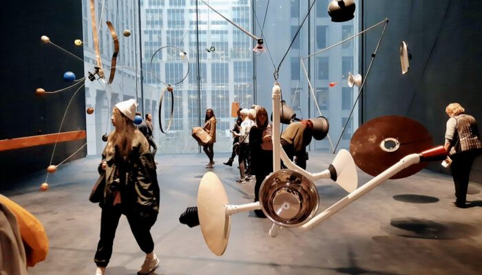
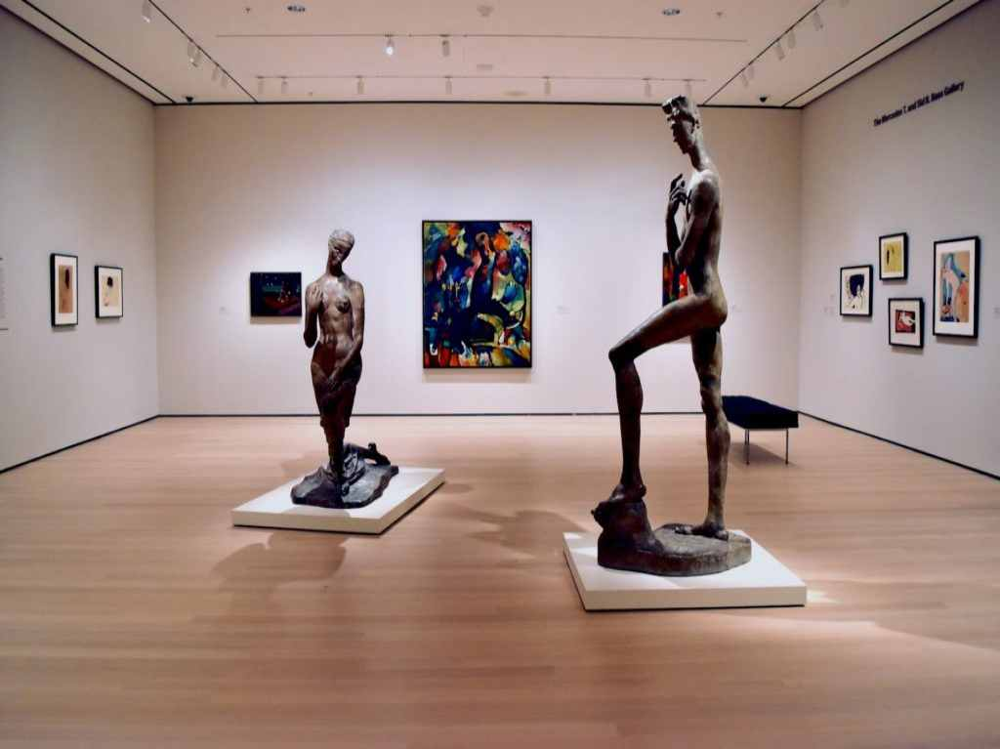
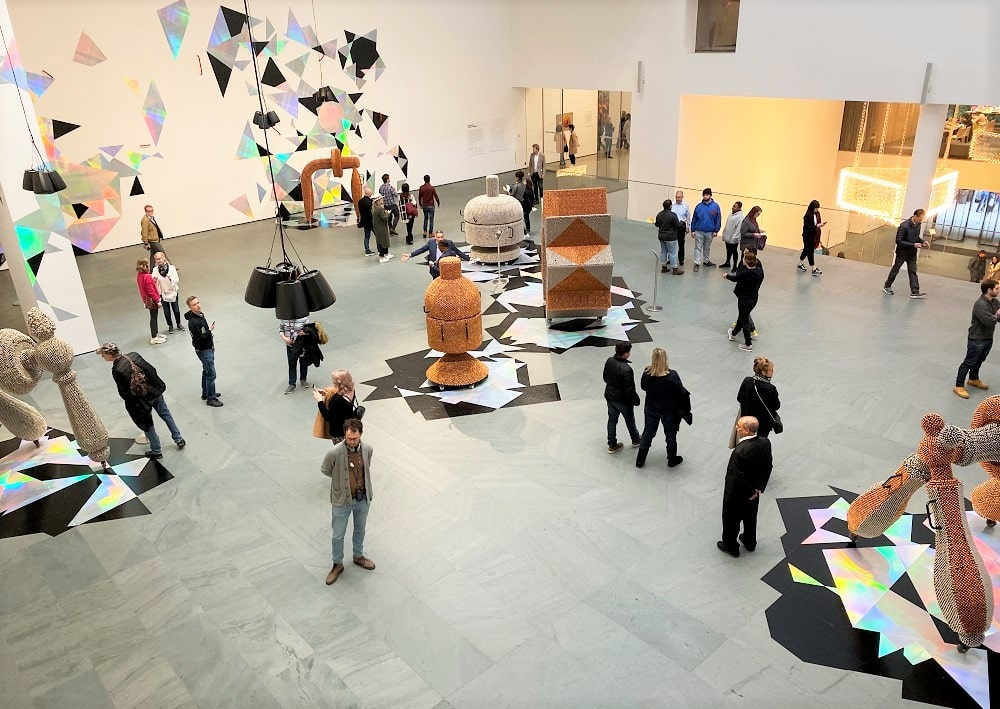

El Museum of Modern Art (MoMA) es uno de los museos más influyentes del planeta para entender el arte de los siglos XX y XXI. Está en Midtown Manhattan y funciona como referencia internacional para artistas, curadores, estudiantes y público general.
Su colección reúne más de 200.000 obras entre pintura, escultura, fotografía, diseño, arquitectura, cine y nuevos medios. Es un museo clave para comprender cómo cambió el arte moderno y contemporáneo.
El MoMA fue fundado en 1929 por un grupo de mecenas liderado por Abby Aldrich Rockefeller. Desde sus inicios apostó por el arte de vanguardia cuando todavía no era ampliamente aceptado por el circuito tradicional.
Con el tiempo incorporó departamentos pioneros de fotografía, diseño y cine, y consolidó una narrativa global del arte moderno. Sus ampliaciones arquitectónicas también marcaron hitos en la museografía contemporánea.
Hoy combina exposiciones temporales de alto nivel con una colección permanente que dialoga entre obras icónicas y artistas emergentes.
Entre sus obras más reconocidas están:
La Noche Estrellada de Vincent van Gogh, una de las pinturas más famosas de la historia del arte moderno.
Campbell's Soup Cans de Andy Warhol, emblema del pop art y de la cultura visual de masas del siglo XX.
Les Demoiselles d'Avignon de Picasso, pieza central para comprender el surgimiento de las vanguardias.
El MoMA abre la mayor parte de la semana con horarios extendidos en ciertos días. La entrada es paga y conviene comprar tickets online para evitar filas.
Para una primera visita, organizá el recorrido por niveles y reservá tiempo para las salas de obras maestras y exposiciones temporales.
Con 3 horas podés ver lo esencial; con medio día recorrés la colección con más profundidad.




,_Madrid_(2).jpg?width=640)
_-_20231202_132951.jpg?width=640)